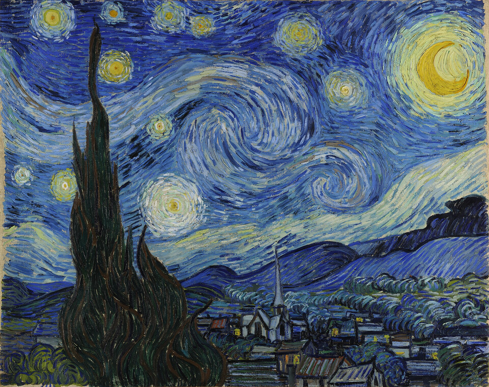
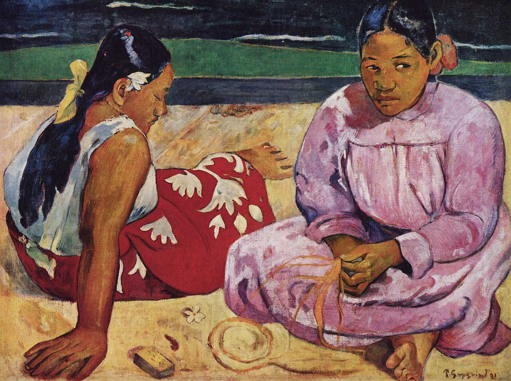
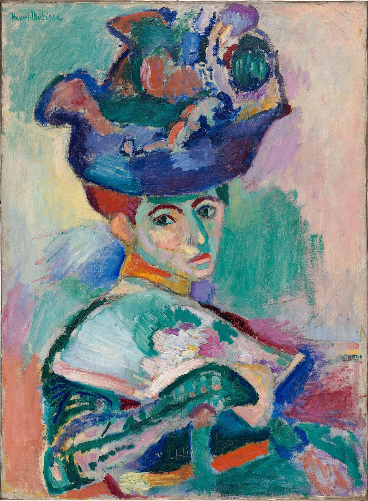
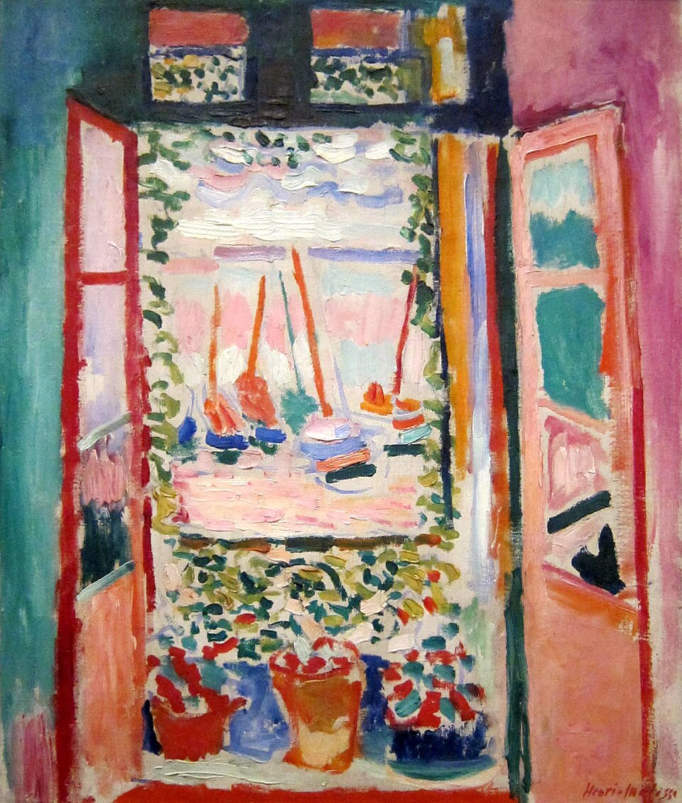
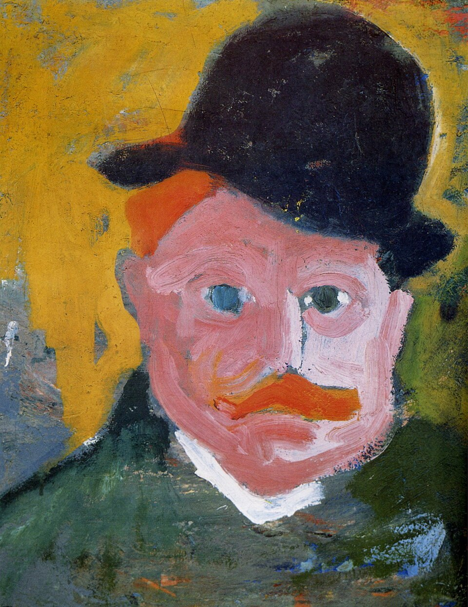

후기 인상주의 · 감정의 색
야수주의는 1905년 전후 프랑스에서 매우 짧게 폭발한 색채 중심의 운동이다. 후기 인상주의가 이미 색을 현실의 복제에서 해방시켰다면, 야수주의 화가들은 한 단계 더 나아가 “사물이 실제로 무슨 색인가?”라는 질문 자체를 거의 버렸다. 얼굴은 초록색, 하늘은 붉은색, 나무는 파란색이어도 된다. 중요한 것은 대상의 정확한 색이 아니라 화면 전체의 감정·리듬·강도였다.
상세 학습
야수주의는 1905년 전후 프랑스에서 자연색과 전통적 명암을 해방해 강한 색과 단순한 형태로 화면의 정서를 직접 조직한 짧지만 영향력 큰 흐름이다. 느슨한 화가 집단이므로 고정된 교리보다 색 사용의 공통 실험을 보아야 한다.
후기인상주의의 상징적·감정적 색을 더 즉각적인 화면 구조로 만들었고, 표현주의는 강한 색을 불안과 사회적 긴장에 더 집중해 사용한다.
흔한 오해: 거칠고 원색적이라는 이유만으로 충동적 그림이라 생각하면 안 된다. 색의 간격과 면적, 윤곽을 세심하게 조정해 강한 조화를 만든다.
인상주의가 빛에 따라 실제로 보이는 색을 연구했고, 후기 인상주의가 색을 감정·상징·구조에 사용하기 시작했다면, 야수주의는 색을 현실에서 거의 완전히 독립된 자율적 조형 요소로 만들었다.
사물의 실제색과 관계없이 강렬한 순색을 선택한다.
해부학적·원근법적 정확성보다 큰 형태와 윤곽을 중시한다.
명암으로 깊이를 만드는 대신 색면이 화면 자체를 구성한다.
넓고 빠르며 거친 붓질을 숨기지 않는다.
대상을 닮게 만드는 것보다 색 자체로 감정과 조화를 만드는 것이 중요해진다.


| 화가 | 색의 역할 | 야수주의가 이어받은 것 |
|---|---|---|
| 반 고흐 | 눈앞의 현실보다 감정을 전달 | 강렬한 색·거친 붓질·감정의 직접성 |
| 고갱 | 색을 현실과 분리하여 상징적으로 사용 | 평면적 색면·단순한 윤곽·비자연적인 색 |
| 쇠라 | 보색과 순색의 시각 효과를 체계적으로 분석 | 강한 보색 대비와 순색의 병치 |
반 고흐·고갱·쇠라 등이 색을 관찰의 도구에서 감정·상징·이론의 도구로 변화시킨다.
신인상주의의 분할색 기법을 경험하면서 순색과 보색 대비를 적극적으로 연구한다.
마티스와 드랭이 프랑스 남부 콜리우르에서 강렬한 햇빛과 색채를 극단적으로 단순화한다.
마티스·드랭·블라맹크 등의 강렬한 색채 작품이 한 공간에 전시되어 큰 논란을 일으킨다.
야수주의는 짧은 기간 뒤 각자의 방향으로 흩어진다. 마티스는 색채와 장식성, 드랭은 보다 고전적 구조로 이동한다.


전통적인 회화라면 창밖 풍경의 원근과 명암을 계산하여 깊이를 만들었을 것이다. 그러나 마티스는 분홍·초록·파랑·주황 같은 색면을 나란히 놓아 깊이보다 화면 전체의 색채 균형을 우선한다.
강렬한 색을 사용하지만 궁극적으로는 화면 전체의 균형, 평온함, 장식적 조화를 추구한다.
도시와 풍경을 보색의 강한 대비로 재구성한다. 실제 빛보다 색 자체의 리듬이 중요해진다.

| 비교 항목 | 후기 인상주의 | 야수주의 |
|---|---|---|
| 운동의 성격 | 서로 다른 화가들을 후대에 묶은 넓은 범주 | 1905년 전후 프랑스에서 나타난 비교적 짧은 그룹적 현상 |
| 색 | 구조·감정·상징·과학 등 화가마다 목적이 다름 | 강렬한 순색 자체가 화면의 중심적 언어가 됨 |
| 실제색과의 관계 | 점차 자유로워짐 | 필요하면 거의 완전히 무시 |
| 형태 | 세잔의 구조, 고갱의 평면화 등 다양 | 대체로 단순한 윤곽과 넓은 색면 |
| 공간 | 각 화가마다 다름 | 깊이보다 평면적 색채 관계가 두드러짐 |
| 목표 | 인상주의 이후 각자의 문제 해결 | 색을 현실로부터 해방하여 표현과 조화의 직접적 도구로 사용 |
| 한 문장 | “보이는 세계를 각자의 방식으로 재구성한다.” | “색은 현실에 복종할 필요가 없다.” |
| 질문 | 반 고흐 | 마티스 |
|---|---|---|
| 왜 색을 바꾸는가? | 감정과 정신 상태를 전달하기 위해 | 화면 전체의 조화·강도·장식성을 만들기 위해 |
| 붓질 | 소용돌이치고 감정적으로 방향성을 가짐 | 넓고 자유로운 색면과 단순한 터치 |
| 형태 왜곡 | 감정의 압력을 전달 | 색채 관계를 단순화·강조 |
| 색의 독립성 | 현실에서 크게 벗어나지만 대상과 감정에 연결 | 색채 관계 자체가 화면의 독립된 목적이 됨 |
| 후대 영향 | 표현주의 | 야수주의 이후 현대 색채회화·추상으로 연결 |
야수주의는 대략 1905–1908년의 짧은 기간만 강하게 유지되었다. 그러나 미술사적 영향은 매우 크다. 색이 현실의 재현에서 자유로워질 수 있다는 사실을 극단적으로 보여주었기 때문이다.
작품 이미지는 자료 폴더의 로컬 이미지 파일을 사용하도록 구성했다.
야수주의 자체는 주로 1905–1908년 프랑스에서 활동한 화가들의 짧은 집단적 현상이다. 다른 나라의 강렬한 색채 운동을 모두 야수주의라고 부르는 것은 부정확하지만, 색의 해방이라는 원리는 빠르게 국제화되었다.
| 국가·지역·세부 사조 | 지역적 특징 | 대표 화가·제작자 | 더 볼 화가 |
|---|---|---|---|
| 프랑스 — 마티스·샤투 중심 야수파 |
| 앙리 마티스 | 앙드레 드랭, 모리스 드 블라맹크 |
| 프랑스 — 르아브르파 야수주의 |
| 라울 뒤피 | 오톤 프리에스 |
야수주의는 오래 지속된 제도적 운동이 아니라 1905년 전후 프랑스에서 짧게 폭발한 색채 혁명이다. 핵심은 자연의 실제색을 충실히 따르는 것이 아니라, 화면의 강도와 조화, 감정의 직접성을 위해 색을 독립된 조형 언어로 사용했다는 데 있다.
위 국가별 전개 표에 실명으로 제시한 화가는 상단 도판에 이미 소개되었는지와 관계없이 모두 다시 확인할 수 있게 배치했다. 독일·러시아의 카드는 야수주의 자체가 아니라, 색채 해방이 각 지역의 별도 사조로 변형된 모습을 보여준다.
선정 이유 마티스는 초상의 피부와 배경까지 순수한 색 관계로 바꾸어 야수주의의 충격과 원리를 동시에 보여 준다.
얼굴에는 녹색, 분홍, 노랑이 현실의 명암 대신 나란히 놓이고 거친 붓질이 형태를 만든다. 색은 사물을 충실히 설명하는 수단이 아니라 화면 전체의 감정과 균형을 결정하는 독립 요소가 된다.

더 볼 이유 드랭은 샤투에서 마티스와 함께 야수파의 강렬한 보색과 자율적 붓질을 발전시켰다.
현실의 런던 풍경을 주황·파랑·초록의 강한 대비로 바꾼 점에서 야수파의 색채 해방이 드러난다. 짧고 방향성 있는 붓질로 도시 구조와 빛을 동시에 단순화한 것이 드랭만의 특성이다.
더 볼 이유 블라맹크는 야수파가 강렬한 원색과 거친 붓질로 파리 근교 풍경을 감정의 장으로 바꾼 모습을 보여 준다.
빨강·파랑·노랑이 자연색을 벗어나 충돌하며 야수파의 색채 해방을 드러낸다. 물감을 튜브에서 바로 짜낸 듯한 공격적인 붓질은 블라맹크만의 특성이다.

선정 이유 뒤피는 르아브르 출신 화가들이 마티스의 색채 혁명을 해안 풍경과 가벼운 장식 언어로 변형한 전개를 보여 준다.
바다와 모래, 인물은 넓은 색면과 빠른 선으로 축약되어 실제 공간보다 리듬감 있는 표면이 된다. 샤투의 강렬한 실험이 르아브르에서는 빛과 여가의 경쾌한 회화로 이어졌음을 비교할 수 있다.
더 볼 이유 프리에스는 르아브르 출신 화가들이 야수파의 색을 항구와 남프랑스 풍경에 적용한 양상을 보여 준다.
굵은 윤곽과 고채도 색은 자연색을 넘어선 야수주의의 특징을 드러낸다. 뒤피보다 무게 있는 형태와 구조를 유지해 색채의 격렬함을 단단한 풍경 구성으로 묶은 점은 프리에스만의 특성이다.